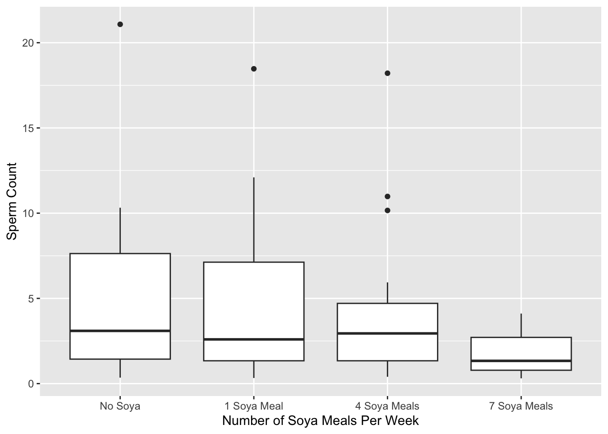

Non-parametric tests are known as assumption-free tests because they make fewer assumptions about the type of data on which they can be used. Non-parametric tests make distributional assumptions (such as the continuous distribution), but they are less restrictive ones than their parametric counterparts.
Non-parametric tests work on the principle of ranking the data. That is, finding the lowest score and giving it a rank of 1, then finding the next highest score and giving it a rank of 2, and so on. The analysis is then carried out on the ranks rather than the actual data.
here() starts at /Users/leedh/self_study/discoverstat
15.4. Comparing two independent conditions: the Wilcoxon rank-sum test
When we want to test differences between two conditions and different participants have been used in each condition, then we can perform the Mann-Whitney test and Wilcoxon’s rank-sum test. These tests are the non-parametric equivalent of the independent t-test.
15.4.1. Theory of the Wilcoxon rank-sum test
Arrange the scores in ascending order, attach a label to remind ourselves which group they came from.
Assign potential ranks starting with 1 for the lowest score.
Add up all of the ranks for the two groups.
Subtract the mean rank from the sum of the ranks.
Take the smallest of these values to be the test statistic.
R then calculates the associated p-value.
The exact approach uses a Monte Carlo method to obtain the significance level. It doesn’t make any assumptions about the distribution. It just put the people (data) into a random group, and then repeats it.
When large sample sizes, a normal approximation is used. The normal approximation doesn’t assume that the data are normal. Instead, it assumes that the sampling distribution of the W statistic is normal. R uses a normal approximation if the sample size is larger than 40.
Sunday / Ecstasy: \(W = 0.81, p = 0.02\) -> Significant -> normal W
Sunday / Alcohol: \(W = 0.96, p = 0.78\) -> Non-significant -> non-normal W
Wednesday / Ecstasy: \(W = 0.94, p = 0.56\) -> non-normal W
Wednesday / Alcohol: \(W = 0.75, p = 0.004\) -> normal W
This finding tells us the fact that the sampling distribution might also be non-normal for the Sunday and Wednesday data and that a non-parametric test should be used.
leveneTest(drugData$sundayBDI, drugData$drug, center ="mean")
Levene's Test for Homogeneity of Variance (center = "mean")
Df F value Pr(>F)
group 1 3.6436 0.07236 .
18
---
Signif. codes: 0 '***' 0.001 '**' 0.01 '*' 0.05 '.' 0.1 ' ' 1
leveneTest(drugData$wedsBDI, drugData$drug, center ="mean")
Levene's Test for Homogeneity of Variance (center = "mean")
Df F value Pr(>F)
group 1 0.5081 0.4851
18
The result of Levene’s test shows that
Sunday data: \(F(1, 18) = 3.64, p = 0.07\)
Wednesday data = \(F(1, 18) = 0.51, p = 0.49\)
The variances are not significantly different, indicating that the assumption of homogeneity has been met.
If we have the data for different groups stored in two columns, then the wilcox.test() function takes this form:
newModel <- wilcox.test(scores group 1, scores group 2, paired = FALSE/TRUE)
sunModel <-wilcox.test(sundayBDI ~ drug, data = drugData)
Warning in wilcox.test.default(x = DATA[[1L]], y = DATA[[2L]], ...): cannot
compute exact p-value with ties
wedModel <-wilcox.test(wedsBDI ~ drug, data = drugData)
Warning in wilcox.test.default(x = DATA[[1L]], y = DATA[[2L]], ...): cannot
compute exact p-value with ties
15.4.5. Output from the Wilcoxon rank-sum test
sunModel
Wilcoxon rank sum test with continuity correction
data: sundayBDI by drug
W = 64.5, p-value = 0.2861
alternative hypothesis: true location shift is not equal to 0
wedModel
Wilcoxon rank sum test with continuity correction
data: wedsBDI by drug
W = 96, p-value = 0.000569
alternative hypothesis: true location shift is not equal to 0
We could say that the type of drug did not significantly affect depression levels the day after.
15.4.6. Calculating an effect size
R doesn’t calculate an effect size for us, but we can calculate approximate effect sizes by converting the z-value into an effect size estimate:
The first command within the function calculates the value of z using the qnorm() function. The p-value associated with the model entered into function, divides it by 2 so that we’re looking at only one end of the normal distribution. The second command computes r using the equation above by dividing z by the square root of N. The final command prints to the console the object data.name from the original model.
15.4.7. Writing the results
Depression levels in ecstasy users (Mdn = 17.50) did not differ significantly from alcohol users (Mdn = 16.00) the day after the drugs were taken, \(W = 64.5, p = 0.286, r = -.25\). However, by Wednesday, ecstasy users (Mdn = 33.50) were significantly more depressed than alcohol users (Mdn = 7.50), \(W = 4, p < .001, r = -.78\).
Median is more appropriate than the mean for non-parametric tests. (Why?)
Jane Superbrain 15.2: Price for the Non-parametric tests
By ranking the data we lose some information about the magnitude of differences between scores.
Statistical power: An ability of a test to find an effect that genuinely exists. It is also known as the probability of avoiding a Type II error.
If we use a parametric test and a non-parametric on the same data, and those data meet the appropriate assumptions, then the parametric test will have greater power to detect the effect than the non-parametric test.
However, when data are not normal we have no way of calculating power, because power is linked to the Type I error rate and the Type I error rate is 5% when the sampling distribution is normally distributed.
Therefore, the statement “Non-parametric tests having an increased chance of a Type II error” is true only if the sampling distribution is normally distributed.
15.5. Comparing two related conditions: the Wilcoxon signed-rank test
The Wilcoxon signed-rank test is used in situations in which there are two sets of scores to compare, but these scores come from the same participants (within group).
drugData$drug: Ecstasy
median mean SE.mean CI.mean.0.95 var std.dev
14.0000000 12.4000000 2.5307004 5.7248420 64.0444444 8.0027773
coef.var skewness skew.2SE kurtosis kurt.2SE normtest.W
0.6453853 -0.4140842 -0.3013525 -1.3686700 -0.5128991 0.9087803
normtest.p
0.2727175
------------------------------------------------------------
drugData$drug: Alcohol
median mean SE.mean CI.mean.0.95 var std.dev
-7.50000000 -6.30000000 2.09788253 4.74573999 44.01111111 6.63408706
coef.var skewness skew.2SE kurtosis kurt.2SE normtest.W
-1.05302969 1.23907117 0.90174219 0.98664006 0.36973617 0.82795980
normtest.p
0.03161929
For the ecstasy group, we have an approximaly normal distribution, \(W = 0.91, p = .273\), but for the alcohol group, we have a non-normal distribution, \(W = 0.83, p < .05\).
15.5.1 Theory of the Wilcoxon signed-rank test
Calculate the difference between Sunday and Wednesday. If the difference is zero, we exclude these data from the ranking.
Rank the differences ignoring the sign of the difference.
Collect together the ranks that came from a positive difference between the conditions, and add them up to get the sum of positive (T+) and negative (T-) ranks, respectively.
The test statistic, T, is the smaller of the two values (T+ / T-).
To calculate the significance of T, calculate the z value using the mean T and standard error.
We want to run our analysis on the alcohol and ecstasy groups separately. Therefore, we have to first split the dataframe into two. Also, because our data are stored in different columns, we need to enter the names of the two variables we want to compare rather than a formula, and we need to include the option paired = TRUE.
alcoholData <-subset(drugData, drug =="Alcohol")ecstasyData <-subset(drugData, drug =="Ecstasy")alcoholModel <-wilcox.test( alcoholData$wedsBDI, alcoholData$sundayBDI, paired =TRUE, correct=FALSE )
Warning in wilcox.test.default(alcoholData$wedsBDI, alcoholData$sundayBDI, :
cannot compute exact p-value with ties
Warning in wilcox.test.default(ecstasyData$wedsBDI, ecstasyData$sundayBDI, :
cannot compute exact p-value with ties
Warning in wilcox.test.default(ecstasyData$wedsBDI, ecstasyData$sundayBDI, :
cannot compute exact p-value with zeroes
alcoholModel
Wilcoxon signed rank test
data: alcoholData$wedsBDI and alcoholData$sundayBDI
V = 8, p-value = 0.04657
alternative hypothesis: true location shift is not equal to 0
ecstasyModel
Wilcoxon signed rank test
data: ecstasyData$wedsBDI and ecstasyData$sundayBDI
V = 36, p-value = 0.01151
alternative hypothesis: true location shift is not equal to 0
15.5.4. Wilcoxon signed-rank test output
The result reports the value of T+ (which it calls V).
When taking alcohol there was a significant decline in depression from the morning after to midweek, \(p = .047\)
When taking ecstasy there was a significant increase in depression from the morning after to midweek, \(p = .012\)
15.5.5. Calculating an effect size
rFromWilcox(alcoholModel, 20)
alcoholData$wedsBDI and alcoholData$sundayBDI Effect Size, r = -0.4450246
rFromWilcox(ecstasyModel, 20)
ecstasyData$wedsBDI and ecstasyData$sundayBDI Effect Size, r = -0.5649883
For the alcohol group there was a medium to large change in depression when alcohol was taken, \(r = -.45\).
For the ecstasy group there was a large change in depression when ecstasy was taken, \(r = -.56\).
15.5.6. Writing the results
For ecstasy users, depression levels were significantly higher on Wednesday (Mdn = 33.50) than on Sunday (Mdn = 17.50), \(p = .047, r = -.56\). However, for alcohol users the opposite was true: depression levels were significantly lower on Wednesday (Mdn = 7.50), \(p = .012, r = -.45\).
15.6. Differences between several independent groups: the Kruskal-Wallis test
Does soya meals uptake influences the number of sperms?
Four groups (Control / 1 soya meals per week / 4 per week / 7 per week)
15.6.1. Theory of the Kruskal-Wallis test
Kruskal-Wallis test is also based on ranked data.
Simply order the scores from lowest to highest, ignoring the group to which the score belongs, and then assign the rank.
Add up the ranks for each group.
Calculate the test statistic, H, according to the formula.
This test statistic follows the chi-square distribution and for this distribution there is one value for the degrees of freedom, which is one less than the number of groups \(k-1\), in this case 3
Levene's Test for Homogeneity of Variance (center = median)
Df F value Pr(>F)
group 3 2.8606 0.04237 *
76
---
Signif. codes: 0 '***' 0.001 '**' 0.01 '*' 0.05 '.' 0.1 ' ' 1
The output shows that the test for those who ate seven meals per week is not quite significant, \(W(20) = 0.912, p = .07\). As such, the data for all of the groups are significantly different from normal.
From the Levene’s test, the assumption of homogeneity of variance has been violated, \(F(3, 76) = 2.86, p = .042\). As such, theses data are not normally distributed, and the groups have heterogeneous variances.
15.6.3. Doing the Kruskal-Wallis test using R Commander
Statistics -> Nonparametric tests -> Kruskal-Wallis test
15.6.4. Doing the Kruskal-Wallis test using R
kruskal.test(Sperm ~ Soya, data = soyaData)
Kruskal-Wallis rank sum test
data: Sperm by Soya
Kruskal-Wallis chi-squared = 8.6589, df = 3, p-value = 0.03419
The significance value is .034. Because this value is less than .05 we could conclude that the amount of soya meals eaten per week does significantly affect sperm counts. Like a one-way ANOVA, though, this test tells us only that a difference exists; it doesn’t tell us exactly where the differences lie.
ggplot(soyaData, aes(Soya, Sperm)) +geom_boxplot() +labs(y ="Sperm Count", x ="Number of Soya Meals Per Week")

15.6.6. Post hoc tests for the Kruskal-Wallis test
The non-parametric post hoc procedure is essentially the same as doing the Wilcoxon rank-sum tests on all possible comparisons. This involves taking the difference between the mean ranks of the different groups and comparing this to a value based on the value of z and a constant based on the total sample size and the sample size in the two groups being compared.
Calculate the rank difference between groups (by(soyaData$Ranks, soyaData$Soya, mean))
Compare the value obtained above to the critical difference calculated by given formula.
Inequality basically means that if the difference between mean ranks is bigger than or equal to the critical difference for that comparison, then that difference is significant.
None of the difference were bigger than the critical difference; hence they all say FALSE, which means that the differences are all non-significant.
kruskalmc(Sperm ~ Soya, data = soyaData, cont ='two-tailed')
Multiple comparison test after Kruskal-Wallis, treatments vs control (two-tailed)
alpha: 0.05
Comparisons
obs.dif critical.dif stat.signif
No Soya-1 Soya Meal 2.2 17.59209 FALSE
No Soya-4 Soya Meals 2.2 17.59209 FALSE
No Soya-7 Soya Meals 19.0 17.59209 TRUE
We have only three tests now and consequently our critical difference has decreased. The critical difference value was decreased, and this is because the significance level was highly adjusted than the adjusted significance level when six tests were performed.
15.6.7. Testing for trends: the Jonckheere-Terpstra test
The Jonckheere-Terpstra statistic tests for an ordered pattern to the medians of the groups we’re comparing. The test determines whether the medians of the groups ascend or descend in the order specified by the coding variable. In our data, for example, we might want to check whether there is an order to our medians: they should decrease across the groups.